Aria is an AI personal assistant for planning and doing everyday work: assignments, projects, messages, reminders. This second study picks up where the first left off and asks a harder question, not can an assistant help, but how much should it do before help becomes intrusion.
The answer is a tier the user chooses at onboarding, Free or Pro, and a set of guardrails that make handing more over feel safe. The work spans three audiences, two tiers, and twenty-five concrete moments where a person hands work to Aria or takes it back.
To pressure-test those moments for real, I took the design past Figma and built a working app, one React Native codebase in TypeScript running on iOS and Android, with a Supabase back end and coded with Claude Code, so the autonomy could be judged the way a user would actually meet it rather than clicked through as a mockup.
My role
Solo Product Designer
Focus
Autonomy, trust & task automation
Scope
25 user stories · 5 journeys
Platform
iOS & Android · React Native (Expo) · Supabase
Language
TypeScript · SQL
Built with
Claude Code
02The challenge
An assistant is only useful if you dare to let it act.
Most productivity tools stop at reminding you. The moment an app offers to act, send the email, schedule the message, redo the plan, people freeze: What if it sends the wrong thing? What if I can't undo it? What if it buries something I wrote?
So the challenge wasn't building automation. It was designing automation people would actually switch on: legible about what it will do, reversible at every step, and honest when it can't keep a promise, while still adapting to a student, an employee, and a founder who each want a different amount of it.
Trust
Give people enough visibility and control to let Aria act on their behalf.
Range
Serve three roles and two appetites for help from one coherent product.
Reversibility
Make every automated action holdable, cancellable, and undoable, end to end.
03Problem statement
The problem isn't planning. It's how much to hand over.
People want less on their plate, but they draw the line in different places, and the same person moves that line day to day. Aria needed a controllable amount of autonomy and the safeguards that make raising it feel safe.
How might we
Let each person hand Aria as much of their work as they trust, and take it back the instant they want to, without ever losing the thread of their plan?
04Solution
Autonomy is a dial, not a switch.
One onboarding question sets the whole relationship, and every safeguard exists so turning the dial up never means giving up control.
Free
You do it
“I plan your work, you do it.” Aria captures, breaks down and schedules, then hands the doing back to you. It drafts and guides, but never sends.
planact
Pro
Aria does it
“I do the work, you check it.” Aria prepares, schedules and can send, after you approve the day once. A ten-minute hold sits before anything runs, so a mistake is always reversible.
Hold · ten minutes before anything sends
Undo · every action swipes back
Honesty · it says when a plan no longer fits
05Design process
One design-thinking pass, end to end.
I ran the five stages of design thinking against a single spine: three audiences, two tiers, and the moments where a person hands work to Aria, or takes it back.
01
Empathize
Research, persona, empathy map
02
Define
Problem, flows, IA
03
Ideate
Storyboard, sketching
04
Prototype
Wireframes, style guide, UI
05
Test
Prototype & usability testing
06User research
I went looking for where trust breaks.
Primary interviews across the three audiences, paired with secondary reading on AI trust and automation, all aimed at one question: what would it take for you to let software act for you?
Participants
8 people
Segments
Study · Work · Own
Method
Semi-structured
Plus
Desk research
Interview guide · a sample
Questions built around stories, not opinions.
Each one asks for recent, real behaviour, and never names a pain, a feature, or Aria, so the answers point at what actually happens rather than what people think they'd want.
Q01
Walk me through how you planned your last busy week. What did you use?
Q02
Describe the last time you added something to a to-do list or app. What was that like?
Q03
Tell me about a recent deadline. Walk me through the days leading up to it.
Q04
Describe a time a plan you'd made stopped matching reality. What did you do?
Q05
Tell me about a time you used an AI tool for something real. What happened?
Q06
When an AI tool suggests something, what do you do with the suggestion?
Q07
Tell me about a time you handed a task to someone, or something, else. How did that go?
Q08
Describe a time you wanted to undo or stop something after you'd started it.
Role-specific probes
Studying
Tell me about the last assignment brief you were given. What did you do with it first?
Employed
Which parts of a recent week felt like admin around the real work? Walk me through one.
Running my own thing
Think of the last project you kicked off. How did you decide it was ready to start?
07Primary research result
Four things every participant said, in their own way.
01
Don't make me fill in a form
Capturing a task felt like paperwork. People wanted to talk, or use a form, and get the same result.
02
Warn me with runway
The panic is days before, not on the day. They wanted to be planned early and re-planned when behind.
03
Prove it before I trust it
Nobody would hand over real work until they'd watched the app run on a realistic day first.
04
Always let me undo
If it acts, they needed a hold, a cancel and a way back, or they wouldn't let it act at all.
“
I don't forget it's due. I forget to start it early enough to do it well.
“
I'd let it send things, if I could see exactly what and stop it in time.
“
Just don't touch the bit I already wrote. Prep the rest, fine.
08Secondary research result
The literature said the same thing louder.
Desk research across AI-trust studies, automation UX patterns and competitor teardowns pointed at reversibility and transparency as the price of admission for acting on a user's behalf.
Trust calibration
People over-trust or under-trust automation when they can't see its confidence or its reasoning. Legibility beats accuracy alone.
Undo > confirm
Reversible actions with a grace period reduce anxiety more than extra confirmation dialogs, which users learn to click through.
Competitor gap
Assistant apps either only remind, or act opaquely. Few let the user set how far the app may go, and fewer make stopping it easy.
09User persona
Amara wants help she can hand back.
A
Amara
21 · she/her
Life right now
Final-year student who also freelances. Assignments, client work, and a social calendar, all at once.
Tier she'd pick
Starts on Free, upgrades to Pro the week two deadlines collide.
“Do the boring parts, but let me stop you if you get it wrong.”
Frustrations
−Starts big tasks too late to do them well
−Won't trust AI that acts without a visible undo
−Retypes the same contacts and messages constantly
Goals
+Be planned early, and re-planned when she slips
+Approve the day once and trust it to run
+Keep full control of anything sent on her behalf
One product, three seats
Studying
Briefs, deadlines, marks. Wants work planned from what she already has.
Employed
Admin between the real work. Wants to approve a day once.
Running my own thing
Scope before schedule, with milestones that force progress.
10Empathy map
Inside the moment she decides to trust it.
Says
“Just remind me, I'll handle it.”
“Not now, push it to tomorrow.”
“Save this so I can send it later.”
Thinks
“I forget to start, not that it's due.”
“Is it actually going to send that?”
“Can I take it back if it's wrong?”
Does
Uploads a brief instead of typing a task
Drags a card across to finish it
Unticks a couple of items in the morning review
Feels
Behind before the week even starts
Wary the first time Aria offers to send
Relief when work is already prepared for her
11Solution presented
Five journeys. Twenty-five moments. Each with a path and a definition of done.
The product is the sum of these steps. Every user story below carries the exact path a user walks and the precise point at which it is finished.
Getting started
Steps 01–05
Account, role, tier and the switches that matter, set before anything real is asked of you.
01
New userI want to sign up so my work is mine and follows me.
Welcome→Sign up→Email & password→Supabase creates the account
✓Done when signed in, empty planner, onboarding begins.
02
New userI want Aria to know what kind of work I do, so it talks to me correctly.
Which fits you?→StudyingEmployedRunning my own thing→Year & subject / area / what you run
✓Done when the profile carries a role, and every prompt from then on addresses you as that, not as a student.
03
New userI want to choose how much Aria does for me.
How much of it should I do?→Free · I plan, you doPro · I do, you check→Limit stated on the card
✓Done when the tier is set, and on Pro the entitlement is written server-side.
04
New userI want the switches that matter set before I start.
Essentials→Let Aria helpNotifications (asks the OS)AppearanceSample tasksPro · send at the scheduled time
✓Done when each switch has written to settings as it was tapped, and the app opens.
05
New userI want to see the app working before I trust it with anything.
Show me around with sample tasksorSee how Aria works · empty Today→Date jumps to a day where something waits
✓Done when samples exist and the date has jumped to a day where something is waiting. Turning it off removes them and restores the real date.
Capturing work
Steps 06–11
Getting a task in, by conversation or by form, and getting the output back out. The result is always the same shape.
06
StudentI want to set up a birthday without filling in a form.
Aria tab · Birthday→Who→Date→Time→Repeat?→Priority→How should Aria handle it? · Text / Email / Call / Picture / Card / Just remind me→Contact→Which card→What it says · Aria drafts & re-tones→Preview
✓Done when you tap Save and it is on the Tasks page with the method, the message and the repeat attached.
07
StudentI want an assignment planned from the brief I already have.
Assignment→Upload the brief→Aria reads it→Extraction card + confidence per field→Fill gaps · Ask tutor / Upload handbook / I know this→Commitments→Plan preview→Accept
✓Done when the task exists with dated steps, step one pinned, and the submission buffer reserved as its own row.
08
Own workI want a project defined before it is scheduled.
Project→What does done look like?→“I can't say yet” becomes task one→Reflect-back card + confidence→Scope · in & deliberately out→Milestones · each needs a forcing function→Plan
✓Done when accepted, with the next action pinned and any milestone that nothing forces flagged.
09
Prefers a formI want to create a task without talking to Aria.
New task→Category tile→Title, date, time, priority, repeat→How Aria should handle it→Contact→Message
✓Done when saved, identical in every respect to one built in chat.
10
StuckI want direction without being handed the answer.
Guide·plan preview / pinned step / definition gate / after a step rolls over twice→One narrowing question→3–4 directions · what it needs, what it costs, which criterion earns marks→Take one
✓Done when the choice is written onto the task and the plan updates around it.
11
UserI want the work Aria produced out of the app.
Ask “save this”orCard after a plan is built→NoteDocumentEmail
✓Done when it is in your Notes, in Files, or in a mail draft, with the same text the task holds.
Getting through the day
Steps 12–16
The daily loop: read what today needs, finish or defer in one gesture, and let Aria do the task with you.
12
UserI want to see what today needs and what Aria can take off it.
Open Today→Tasks, each with Aria's offer→Coming up
✓Done when nothing more is needed. This is the read-only state.
13
UserI want to finish a task in one gesture.
Drag the card across→Completes on release·Swipe back undoes·Repeating spawns next occurrence
✓Done when it completes on release, no second tap.
14
UserI want to push something I cannot do today.
“Not now” on an offer→Moves to tomorrow→Banner offers a proper day & time
✓Done when the task carries the new date, or you have picked one deliberately.
15
UserI want Aria to do the task with me on the day.
Tap the offer→Aria drafts→Read / rewrite tone / edit→Approve→Opens Mail / Messages / WhatsApp filled in, or sends the email itself
✓Done when sent, and the task is checked off as handled by Aria.
16
StudentI want to work through an assignment rather than stare at it.
Open the task→Step by step through the breakdown→Research help on any single step→Drafted sections saved to the task
✓Done when steps are ticked and the sections are on the task, ready to assemble.
Pro · Aria acts for you
Steps 17–21
The top of the dial: approve once, let Aria prepare, send and self-correct, with a hold and a cancel on everything it does.
17
Pro userI want to approve my day once and get on with my life.
Morning prompt at your hour→Review opens→I'll send theseReady for your tapYours todayBlocked · the one thing it needs→Untick anything→Approve
✓Done when the sendable items are scheduled, and each is held ten minutes before it runs.
18
Pro userI want the drafting done before I open the task.
Nothing to do→Aria finds anything due in 3 days with no message or breakdown→Prepares it when the app becomes active→Tells you what it did
✓Done when the task already has its draft or its steps when you open it, and nothing you wrote yourself was overwritten.
19
Pro userI want my plan to stay true when I fall behind.
Nothing to do→Past steps spread across the days that are left→Buffer intact→Aria says how many moved
✓Done when no step is dated in the past, and if it no longer fits before the deadline, Aria says so rather than pretending.
20
Pro userI want to stop something I approved by mistake.
Automations listorThe notification→Cancel, within the ten-minute hold
✓Done when cancelled locally and on the server, so the cron cannot still send it.
21
Pro userI want to know it happened.
Scheduler sends→App reports back on Today
✓Done when the automation reads sent, and the task is checked off.
Everything else
Steps 22–25
Seeing the shape of a week, reaching people without retyping them, testing on any day, and owning your data.
22
UserI want to see the shape of my week.
Calendar→Month / week / day→Agenda underneath→Rebalance a packed day
✓Done when you can see the load. Rebalance moves work off a packed day.
23
UserI want to reach the people I message without retyping them.
Choose from your contacts→Filled fields disappear, leaving the person→Only a genuinely missing detail is asked for
✓Done when the task carries the name, and whichever of number or address the method needs.
24
UserI want the app to look the way I want and to test it on any day.
Settings→AppearanceorSimulated date control→Jump to a day with something waiting
✓Done when the theme is remembered per device, and the banner says which day you are on.
25
UserI want my data to be mine.
Settings→Reset demo dataStart freshSign out→A new account on this device clears the last person's data
✓Done when what remains is only what belongs to whoever is signed in.
12Storyboard
One day, one deadline, one hand-off.
Amara's assignment week, framed as the six beats the product has to earn.
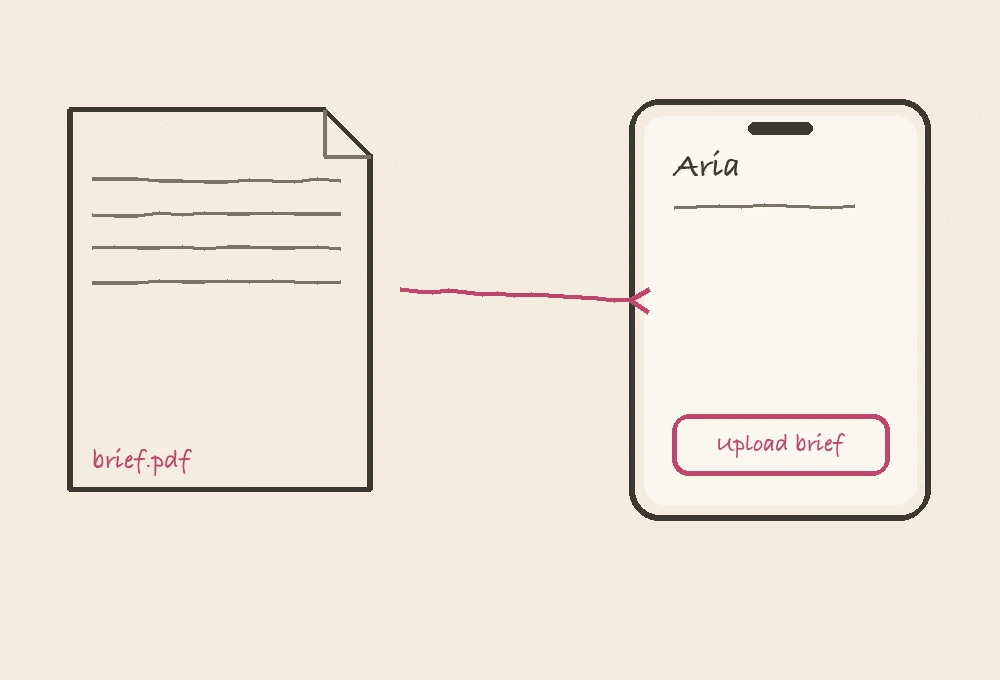
Scene 01
The brief lands
Amara gets an assignment brief. Instead of a blank task, she uploads the PDF to Aria.
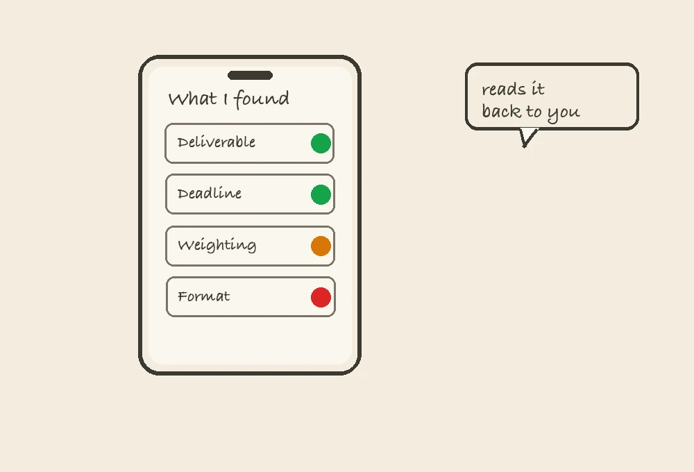
Scene 02
Aria reads it back
Deliverable, deadline and weighting come back with confidence labels. She fills the one gap.
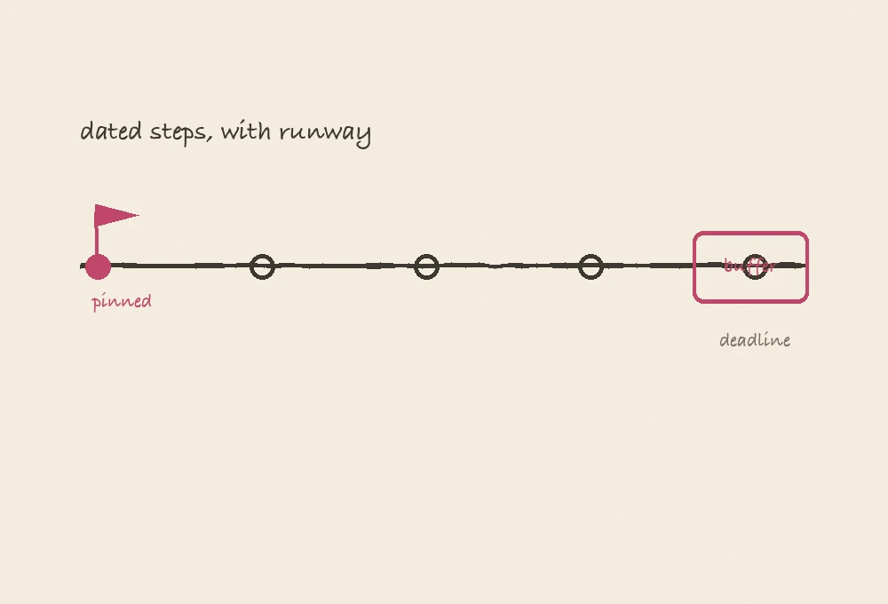
Scene 03
A plan with runway
Dated steps, step one pinned, a submission buffer reserved. She accepts.
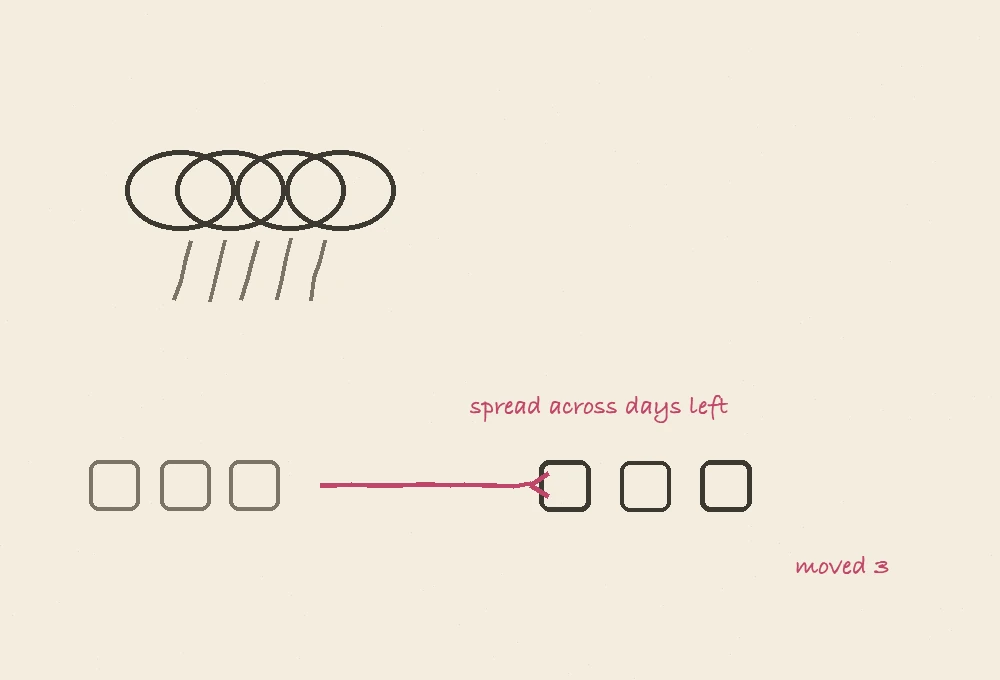
Scene 04
A bad week hits
She falls two days behind. Aria spreads the past steps across what's left and says how many moved.
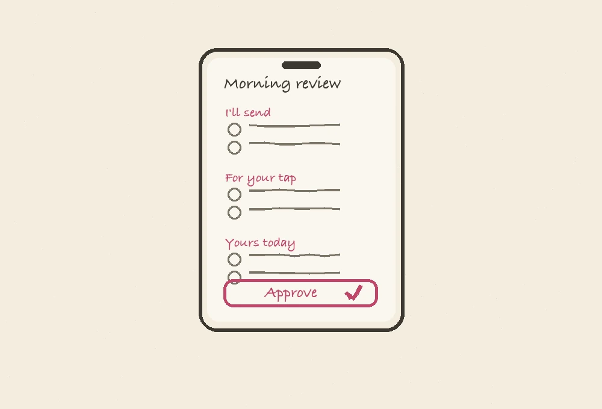
Scene 05
Approve the day
On Pro, the morning review lists what Aria will send. She unticks one, approves the rest.
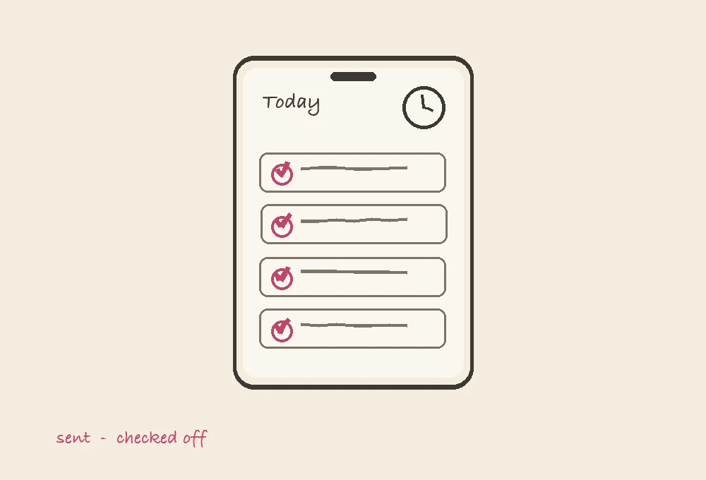
Scene 06
It reports back
Items send after the ten-minute hold. Today shows them as sent, tasks checked off.
13User flow · Assignment task
From a brief to a dated plan, with a gate for every gap.
The flagship flow. Aria never plans on guesswork: any field it can't read with confidence becomes a gate the user resolves before a plan renders.
Escape hatch: stuck at any step → Guide offers 3–4 directions, each with what it needs, what it costs, and which criterion earns marks.
14Information architecture
Five tabs, one create action, everything a tap away.
Navigation stays small so the app never has to be re-learned. Onboarding sits outside the shell; Wallet-style essentials live in Settings.
Today
Tasks for the day + Aria's offer
Coming up
Sent / handled reporting
Tasks
Birthday · Assignment · Project
Method, message, repeat
Steps & drafted sections
Calendar
Month / week / day
Agenda underneath
Rebalance a packed day
Aria · create
Guided capture (chat)
New task (form)
Guide when stuck
Automations · Pro
Morning review
Scheduled sends + ten-minute hold
Cancel
Settings
Appearance · Notifications
Simulated date
Reset / Start fresh / Sign out
15Sketching
Cheap, fast, and thrown away on purpose.
Low-fidelity passes on the risky screens first: the onboarding tier choice, the extraction card, and the morning review.
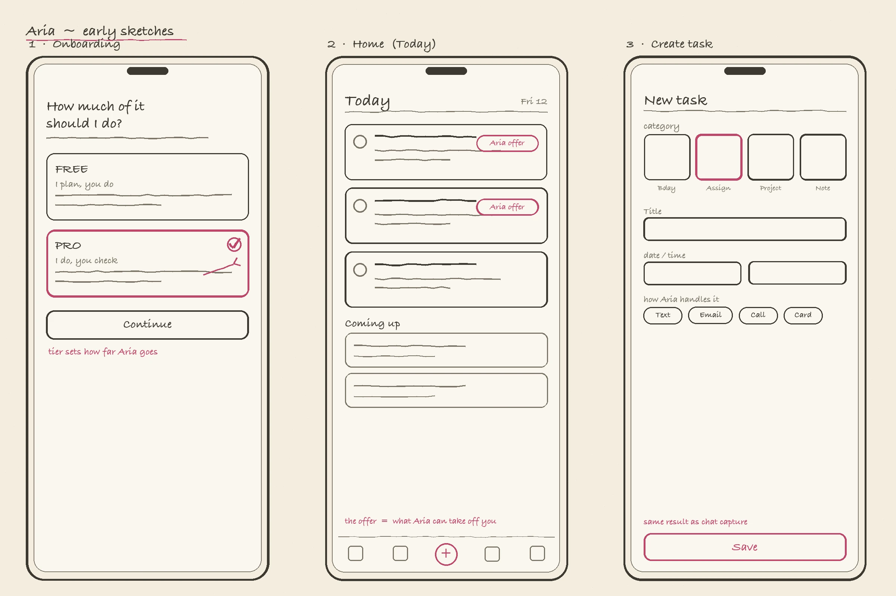
16Wireframing
Mid-fidelity, to lock hierarchy before pixels.
Greyscale wireframes fixed what leads each screen, the offer on Today, the confidence on the extraction card, the three lists in the review, before any visual design.
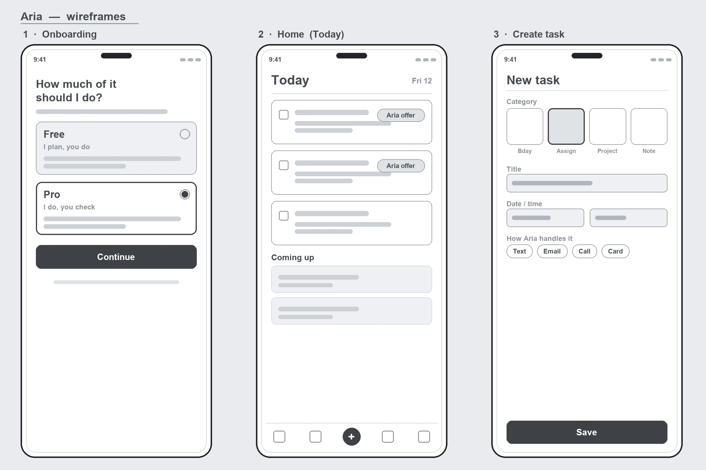
17Style guide
A calm base so the signals can speak.
A quiet dark surface, one warm accent, and a fixed confidence palette that means the same thing everywhere: green certain, amber check it, red don't trust it yet.
Colour palette
Surfaces & text
Base
#0B0A0A
Card
#141210
Elevated
#1B1815
Border
White 10%
Accent
#FFD8E4
Accent wash
Tint 8%
Text
#F5F4F2
Secondary
#A1A1AA
Muted
#6F6B64
Semantic · light / dark
Success
#027A48 · #32D583
Warning
#B54708 · #FDB022
Danger
#B42318 · #F97066
Priority · light / dark
Priority · low
#98A2B3 · #667085 (alt #7A7A7A)
Priority · medium
#F79009 · #FDB022
Priority · high
#F04438 · #F97066
Typography · Inter
DisplayBold · 40 / -3%
HeadingBold · 24 / -2%
SubheadSemibold · 18
Body, the workhorse for task and plan copy.Regular · 15
Small · secondary details and captionsRegular · 13
Eyebrow labelBold · 12 / 0.14em
Mono · keys · ids · codeMono · 13
Icons · 24px stroke
Today
Tasks
Calendar
Create
Settings
Notify
Search
Hold
Upload
Undo
Send
Done
Logo
App icon
Mark · on dark
Mark · on light
Aria
Horizontal lockup
Clearspace: keep at least the height of the small spark clear on every side. Minimum size: 24px for the mark, 20px for the app icon. The mark is one colour, navy on light surfaces, white on dark, never recoloured or outlined.
Buttons
Variants · resolved on the White theme
ApproveNot nowGuideDeleteDisabled
primary: fill accent · label accentInk · no bordersecondary: fill surface · label ink · borderghost: transparent · label accent · no borderdanger: fill danger · label accentInk · no border
Primary · resolved per theme
Approve
White · #333D56 / #FFF
Approve
Linen · #333D56 / #FFF
Approve
Charcoal · #D1D1D1 / #1C1C1C
Approve
Midnight · #BAC3D6 / #12161E
Sizes · rounded-2xl (20px)
Small · 36Medium · 48Large · 56
Danger fill is #B42318 on light themes, #F97066 on dark. Disabled drops to 40% opacity. Press feedback is opacity, not colour: 80% on filled, 70% on secondary, 60% on ghost.
Input fields
Add a title…
Happy birthday, Tunde!
Focused · Aria re-tones this before it sends.
not-an-email
Enter a valid email address.
Dropdown · select
Email
Text
Email
Call
Just remind me
Toggles & selection
On Off
Checked Unchecked Selected Radio
Path chipActive chipRole tag
SuccessWarningDanger
Priority lowPriority mediumPriority high
18UI
The screens where trust is won.
Final UI for four moments that matter most: choosing how much Aria does in onboarding, capturing a task, the task list where Aria offers to help, and working an assignment step by step.
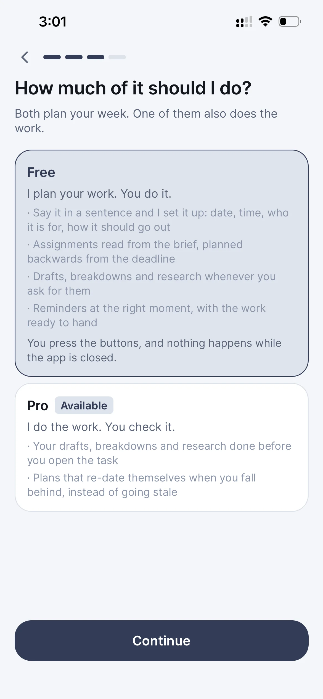
Onboarding · tier choice
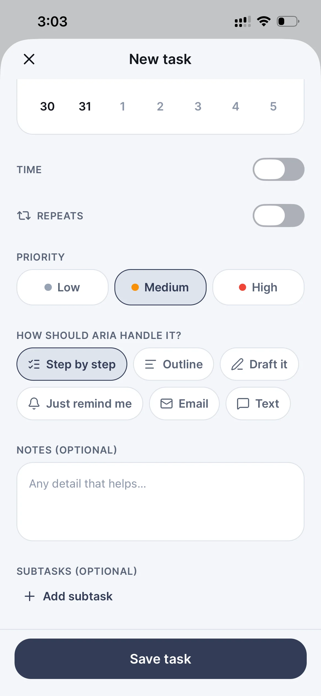
Capture · new task
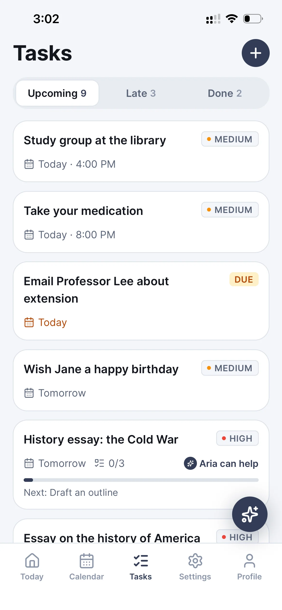
Task list · Aria's offers
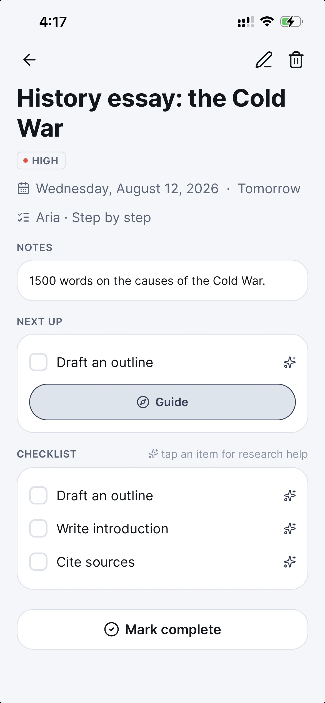
Assignment · step by step
19Testing phase · Prototyping
A working prototype, not a linked mockup.
Autonomy is hard to judge from a clickable mockup, a fake "send" never risks anything. So I took the design past Figma and built it for real. Using Claude Code, I turned the screens into a working React Native app in TypeScript on a Supabase back end, with real navigation, real data, and real hold-and-cancel, so every autonomy moment could be met the way a user actually would.
Designing and coding in the same loop meant decisions were tested against a running build, not imagined: if a guardrail felt unsafe on screen, I could change it in code the same afternoon and feel the difference immediately.
The build is one codebase of roughly 30,000 lines of strict TypeScript across 140 files, the screens, the pure-logic modules, the store, the server routes and six check suites, plus a Deno Edge Function on Supabase so Aria can send while the app is closed. There's no Swift or Kotlin: React Native compiles the same code to iOS and Android, and native capabilities, contacts, notifications, the camera roll, are reached through Expo.
Design → code
Screens became a real React Native app in TypeScript, built with Claude Code, so navigation, empty states and failures behaved, not just looked, right.
A real back end
Supabase (Postgres + row-level security) for auth and data: sign-up creates the account, the Pro entitlement is written server-side, and a new sign-in clears the last person's tasks.
The automation loop
A Deno Edge Function on pg_cron runs the sends: each is held ten minutes before it fires, and cancel kills the job locally and on the server so the cron can't still send.
Built to be tested
Sample tasks and a simulated-date control let a tester jump to a day where something is waiting and reach any autonomy moment on demand.
Prototype demo, the autonomy loop end to end: onboarding → capture → review → send.
20Usability testing
It held up, and told me what to fix.
Moderated sessions across the three roles, each walking a real task end to end. The autonomy model landed; the friction was in wording and discoverability, exactly where I could act.
Participants
6
Tasks each
5
Method
Moderated
Roles
Study · Work · Own
Finding 01
The hold wasn't obvious enough
Users approved, then panicked. Fix: a visible ten-minute countdown with Cancel on the notification and the automations list.
Finding 02
“Free vs Pro” read as pricing, not behaviour
Fix: each card leads with what Aria does, “you do it” vs “you check it”, and states the limit in plain words.
Finding 03
Low-confidence fields were skimmed
Fix: the plan won't render until every low-confidence gate is resolved, turning a warning into a required step.
What this study taught me
Designing autonomy is designing the exits.
People don't hand work to an assistant because it's clever. They hand it over because they know they can take it back, the hold, the undo, the cancel, and the honest “this no longer fits” did more for trust than any amount of automation. Get the exits right and the dial can go as high as the person is ready for. Get them wrong and even the smartest help stays switched off.
![Assignment task flowchart: Assignment → Upload the brief → Aria reads it → an Extraction card with per-field confidence (Deliverable and Deadline high, Weighting and Criteria medium, Format rules low). A decision, all fields confident? On No it routes to a Resolve gaps group (Ask tutor, Upload handbook, I know this) and back to the card; on Yes it flows to Commitments → Plan preview → Accept? which produces a task with dated steps, step one pinned and a buffer reserved. A Stuck branch from Plan preview opens Guide, offering 3-4 directions.](assets/aria2-userflow.webp)